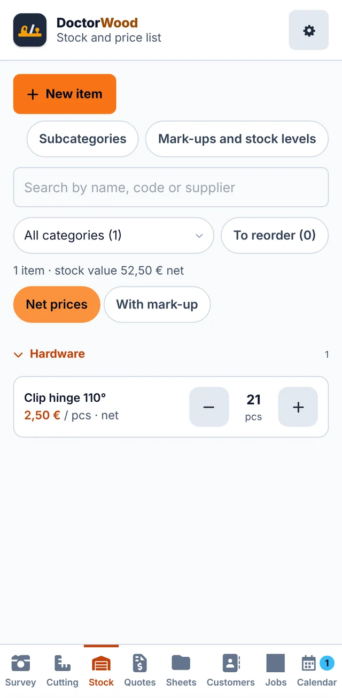
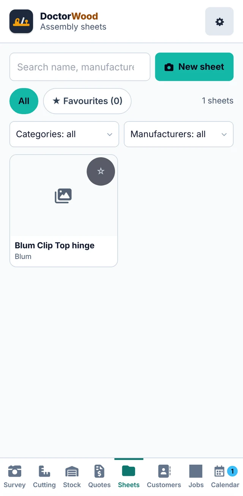
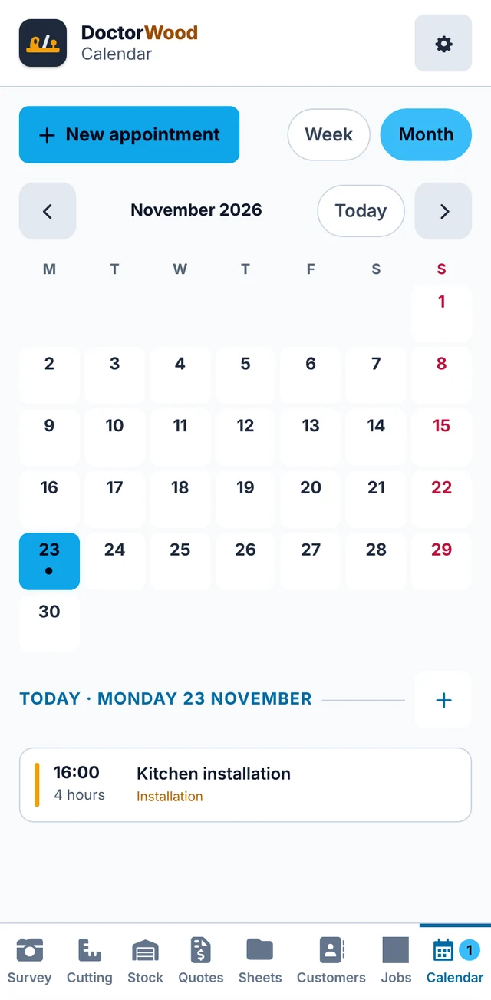
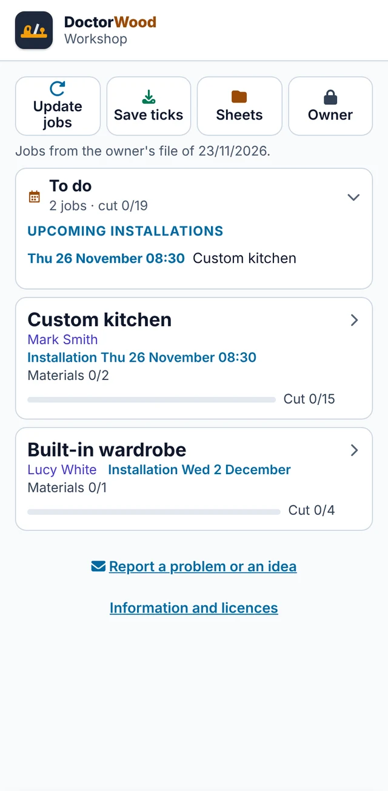
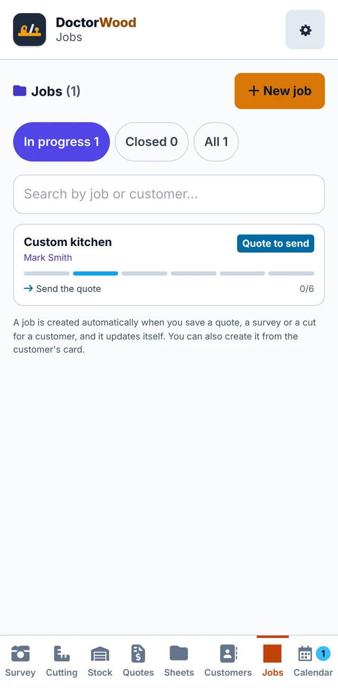

DoctorWood
Workshop management for carpenters and joiners, even without internet.
From the on-site survey to the quote, from panel cutting to the workshop tablet. All on your phone, with no subscription and no server.
- Free
- Open source
- No account
- Works offline
- Android 10+





What it does
From survey to quote
On-site photos with dimensions drawn on them; PDF quote with the customer's finger signature.On-site photos with dimensions drawn on them; PDF quote with the customer's finger signature.
Panel cutting
Optimises parts on panels, reuses offcuts, compares up to 4 layouts. QR labels and DXF files for the panel saw.Optimises parts on panels, reuses offcuts, compares up to 4 layouts.
Customers, jobs and calendar
Customer records, jobs in production, appointments, stock and assembly sheets in one place.Customer records, jobs in production, appointments, stock and assembly sheets in one place.
The workshop tablet
In the shop it only sees jobs, parts and materials to build: no prices, no customer phone numbers. Ticks flow back to the owner.In the shop it only sees jobs, parts and materials to build: no prices, no customer phone numbers.
Phone and tablet always in step
Direct sync over Wi‑Fi, with no server. Your data stays yours.Direct sync over Wi‑Fi, with no server.
Several owner devices
The owner's devices merge: customers, quotes, cutting, stock, photos and sheets reach every device. A restore point is created before merging and nothing is lost silently.The owner's devices merge: customers, quotes, cutting, stock, photos and sheets reach every device.
Off the Wi‑Fi too
With your own Google Drive or Dropbox your devices stay in step even away from the office, using encrypted files.With your own Google Drive or Dropbox your devices stay in step even away from the office, using encrypted files.
Backups
Password-protected backup, even automatic once a day, and restore to an earlier point.Password-protected backup, even automatic once a day, and restore to an earlier point.
Italian and English
Built-in guide and tutorial.Built-in guide and tutorial.
See how it works
Short clips, no sound.
Panel cutting
Quote with signature
The workshop tablet
Getting started
- InstallInstall DoctorWood on the owner's phone. On the tablet choose "Workshop" mode.
- PairFrom settings show the code or QR and enter it on the other device.
- WorkEveryone does their part: changes line up on their own, and if needed you decide what to keep.
Frequently asked questions
Can I use it alone, without other devices?
Yes. The app is designed to work independently: syncing is optional and, when off, no data leaves the phone.
Does the tablet see prices?
No. In Workshop mode the tablet only receives what it needs to build and assemble.
How much does it cost?
Nothing. The apps are free, with no ads and no purchases. If they help you, you can buy us a coffee at ko-fi.com/crslabs.
Where does my data go?
It stays on your device. CrsLabs runs no servers and collects nothing. Details are in the privacy policy.
How do I install and update it?
Download the file from the Releases page on GitHub and open it: Android will ask you to allow installing from that source. Later updates are offered inside the app and install over the old version, without losing data.
Something is wrong, or I have an idea.
Write to crslabs.info@gmail.com or use "Report a problem or idea" inside the app.